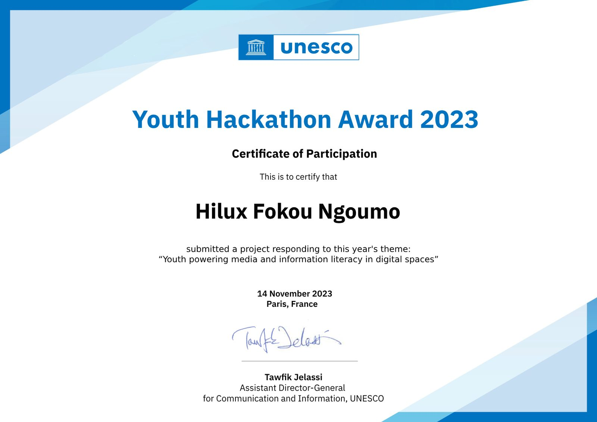
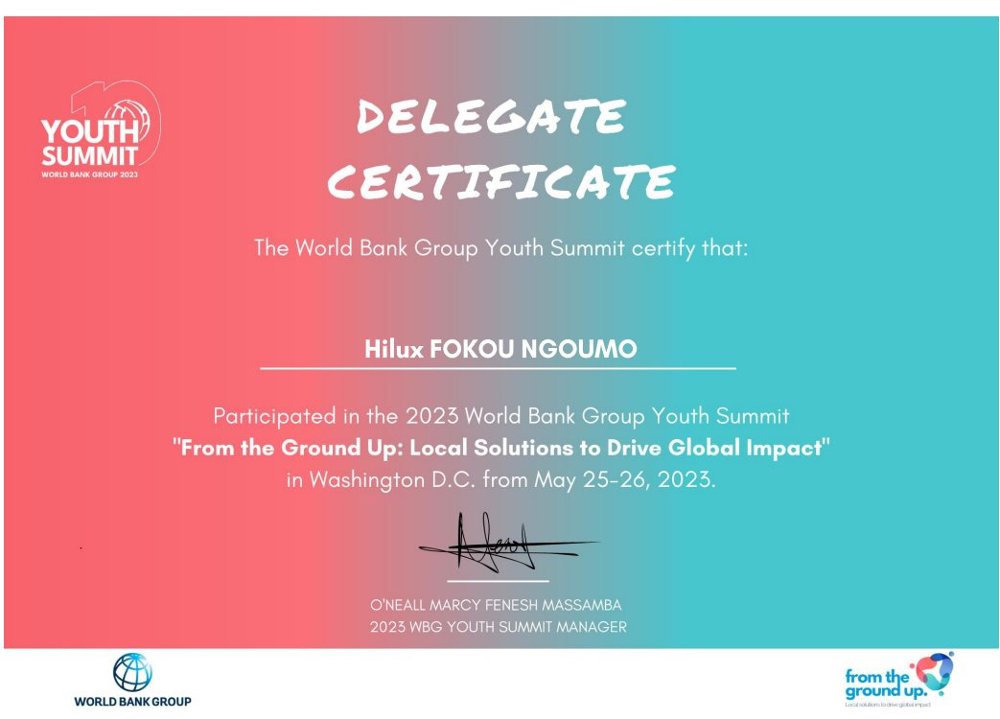
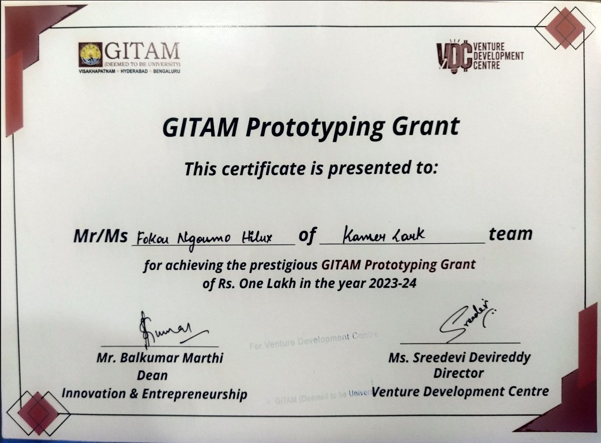

Global Youth Leadership & Advocacy
Throughout my journey, I've had the privilege to engage on the global stage and drive transformative change. My involvement spans several influential events, including:
- COP27 – Sharm El Sheikh, Egypt (Nov 2022): Participated in pivotal climate negotiations, emphasizing the urgent need for youth-led sustainable development.
- COP28 – Dubai, UAE (Dec 2023): Engaged in discussions on global stocktake and loss & damage, advocating for inclusive policies that empower future generations.
- CSW66 – Nairobi, Kenya (Mar 2022): Contributed to a groundbreaking session marking the first Africa-hosted Commission on the Status of Women, highlighting critical gender issues.
- CSW67 – New York, USA (Mar 2023, Virtual): Participated remotely to demonstrate that distance is no barrier to impactful advocacy.
- CSW68 – New York, USA (Mar 2024): Served as a panelist at the UN Headquarters during the Youth Forum’s opening ceremony, where I provided strategic recommendations directly to global leaders.
- SB58 – Bonn, Germany (Jun 2023): Engaged in sessions focused on global stocktake and just transition, ensuring youth voices were at the forefront of climate dialogues.
- SB60 – Bonn, Germany (Jun 2024): Contributed to discussions on the enhanced Lima work programme, emphasizing the intersections of gender and climate change.
- World Bank Group Youth Summit 2023 – Washington D.C. (May 2023): Honored to participate under the theme "From the Ground Up: Local Solutions to Drive Global Impact", where I engaged with decision makers, shared innovative tech solutions, and advocated for sustainable, inclusive change.
I am deeply grateful for the trust placed in my work. Each experience has empowered me to advocate for social justice and drive positive change on a global scale.

Academic & Award Honors
I won the Study In India(SII) Scholarship that gave me a chance to pursue a Bachelor in Computer Applications(BCA) in India. I was awarded as an Outstanding Achiever of the year 2024 at GITAM University and honored with the First Class with Distinction Degree by GITAM University, I have also secured accolades at the Smart India Hackathon and achieved the Open Doors Scholarship for further studies in Information Security.

Tech Innovation & Research
My journey in innovation spans founding KamerLark to revolutionize student housing, developing EcoCityAdapt for climate education, and building systems like ProctoShield, Sealtrace, and Haven — a transparent, rule-based tool routing survivors of online violence to vetted support resources. I have also presented influential research papers including "From Data to Action" and "NLP in the Digital Age".